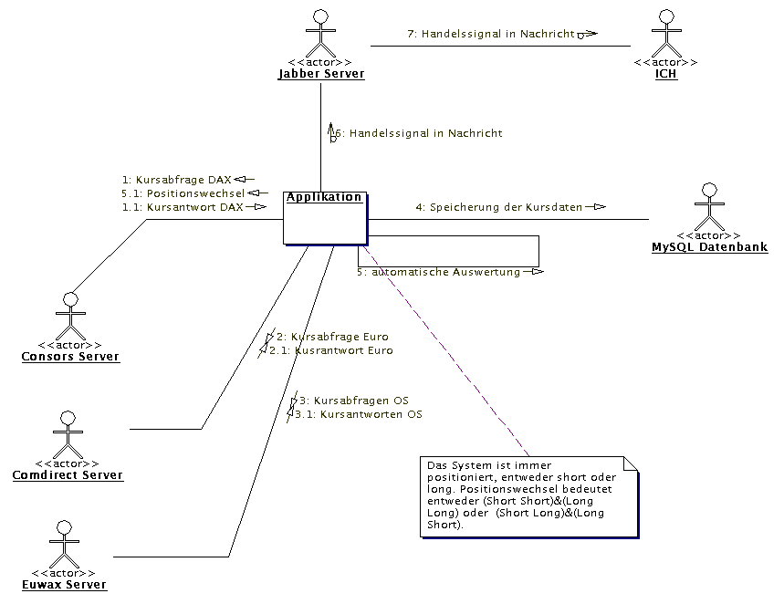

CCAPI - direct link api to consors' servers |
||
| Forum | JavaDoc documentation | CodeView |
Disclaimer: Der Benutzer dieser Quelltext-Dateien ist voll selbst verantwortlich für etwaige Schäden durch die Verwendung dieser Dateien. Der Autor dieser Quelltexte ist nicht verantwortlich für etwaige Schäden durch die Verwendung dieser Daten - z.b. durch direkten Kauf irgendwelcher Wertpapiere, o.ä.. Mit Verwendung dieser Texte erkennt der Nutzer die Nichtverantwortlichkeit des Autors an. Der Autor geht davon aus, dass der Benutzer dieser Texte weiss was er tut!
Wichtiger Hinweis: Keinen Unfug mit den Consors Servern machen!!! Ich brauche die Dinger noch, schliesslich muss ich damit handeln!
Dies ist die offizielle Seite der CCAPI. CCAPI ist eine Programmierbibliothek geschrieben in Java. Eckpunkte der CCAPI:
Diese Software wird unter der LGPL entwickelt. Kinnas, das ist eine echt lockere Lizenz, also locker bleiben!
Download Link direkt von diesem Server, mit dem aktiven Download erkennen Sie den Disclaimer und das Lizenzmodell an: ccapi.zip
Die einzige Kleinigkeit die man beim Kompilieren beachten muss ist, die Datei jsse.jar eventuell explizit in den Classpath zu legen. jsse.jar wird mit jeder JDK Version h?her als 1.4.x mitgeliefert, nur ist die Datei nicht auf allen Rechnern im Classpath eingebunden. Bei mir liegt die Datei in /usr/lib/j2sdk1.4.2_03/jre/lib/jsse.jar . Ausserdem muss javax.xml.* im Path liegen, diese Klassen liegen in rt.jar. Also:
Kompilieren mit:
us@uls_ibm:~/workspace/CCAPI$ javac -classpath /usr/lib/j2sdk1.4.2_03/jre/lib/jsse.jar:/usr/lib/j2sdk1.4.2_03/jre/lib/rt.jar:$CLASSPATH:. CCAPI/*.java
us@uls_ibm:~/workspace/CCAPI$
Hier ein kleines Beispielszenario wie ich die API einsetze:
Auf einem Server in den Staaten (in Seattle um genau zu sein) läuft auf meinem shell account eines meiner Programme. Das Programm beinhaltet die CCAPI. In regelmäßigen Abständen (alle sechs Sekunden) wird der Dax Stand über Consors und der Euro Stand über einen Comdirect-Seiten-Parser abgerufen. Eine höhere Systemauflösung ist absolut unnötig - zumal selbst die Consors Quotes nur eine 15 Sekunden Samplingrate haben.
Die anfallende Datenmenge wäre viel zu groß um sie ungefiltert zu speichern. Deswegen werden drei Arten Candles produziert - 3 Minuten, 10 Minuten und 60 Minuten, immer zu vollen Einheiten, also beispielsweise um 11:00, 11:03, 11:06....11:10... 11:15... werden diese Kerzen gespeichert.
Die gesammelten Daten fließen in eine MySQL-Datenbank mit mehreren Tabellen für jede Kerzenart. Piece of cake sozusagen.
Die Datenmenge ist beachtlich. Pro Tag fallen ca. 2 MB Daten an, MySQL wird bei solchen Datenmengen irgendwann merklich speicherhungrig.
Direkt nach dem Speichern der Daten werden die Daten live ausgewertet, dazu verwende ich die in der FinancialLibrary Klasse implementierten Routinen. Ehrlich gesagt ist Durchschnittstraden ziemlicher schrott - oder ich habe die richtigen Durchschnitte noch nicht gefunden .... jedenfalls ist das meine Erfahrung.
Da ich aktiv bei jabber.org dabei bin und mit dem IM System (Instant Messaging) viele gute Erfahrungen gemacht habe (Grüße an dieser Stelle an sharewatch.com!) schickt mir mein kleines System automatisch Handelssignale als IM auf meinen Jabber account uls@jabber.org.
Manchmal funktionierts ganz gut, mein System, in Seitwärtsphasen produzierts aber immer Verlust.
Was vielleicht interressant wäre, Strippen und Strappen und Straddeln mit automatischer OS Selektion einzubauen ... nur ob das was bringt...
Hier noch ein kleines Systemdiagram:
Die zentrale Klasse der Bibliothek ist die ConsorsConnection-Klasse. Diese Klasse kann sowohl als Standalone aufgerufen werden (sie hat ein static void main()) oder eingebunden werden in ein anderes Programm.
Die Klassen ComdirectRetriever und EuwaxRetriever sind eigentlich relativ unabh?ngig von der ConsorsConnection Klasse. Ich habe die Dateien der Vollständigkeit halber in die CCAPI gepackt. Verwendung ist ganz einfach: Instantieren und mit retrieveData(wkn) die relevanten Daten holen. Zu beachten ist, dass bei den beiden Klassen nicht die eigentliche WKN sondern die Provider spezifische Bezeichnung verwendet werden muss, also bspw. EURUSD.ETR für den euro/dollar Kurs bei comdirect.
Ich persönlich empfehle das Forum!
| website (c) 2003-2004 Ulrich Staudinger - letzte aktualisierung am 19.4.2004 |
| Kontaktinformationen: us@activestocks.de |